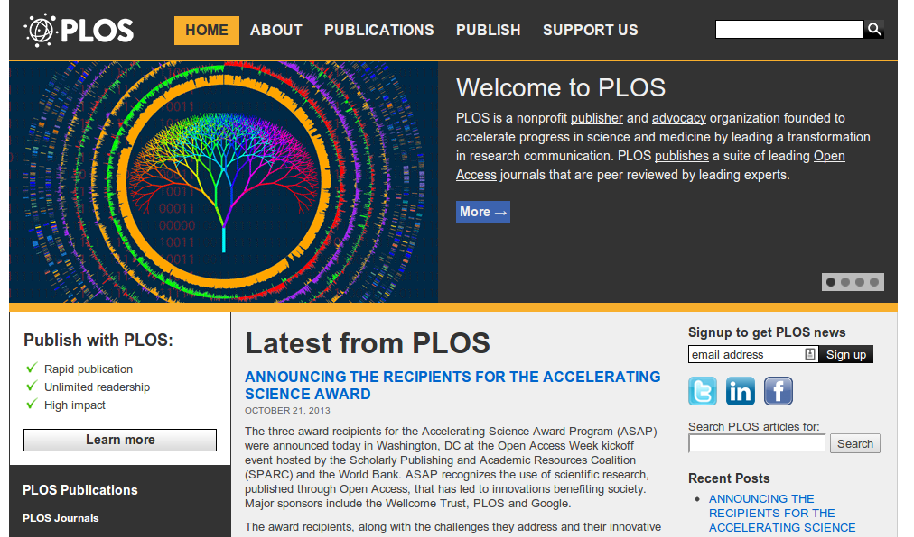
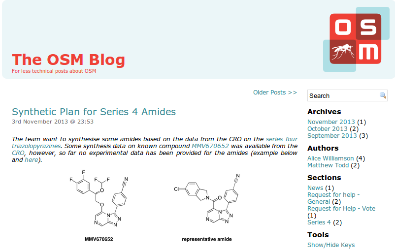
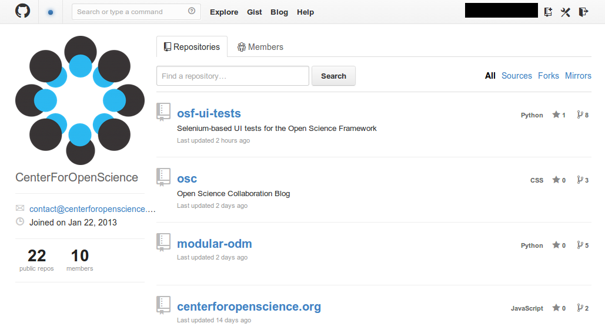
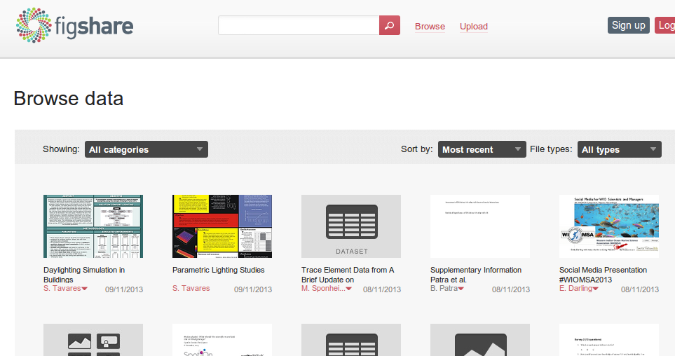
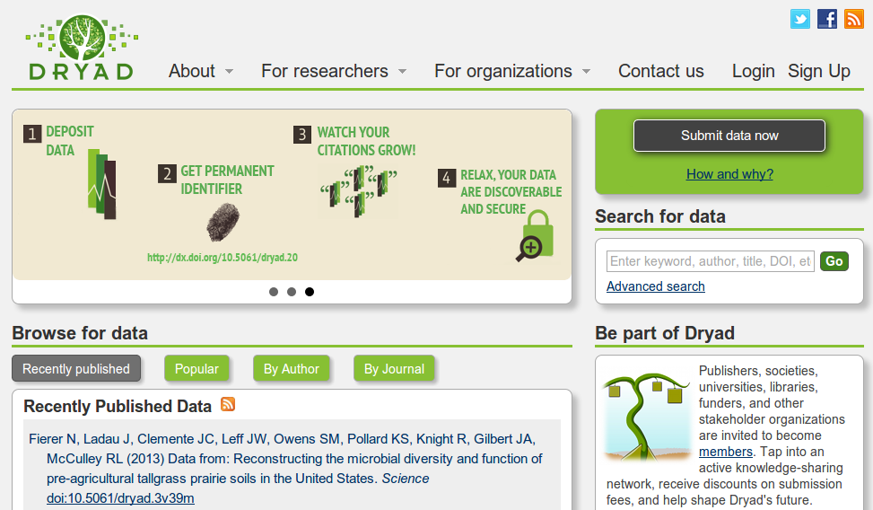
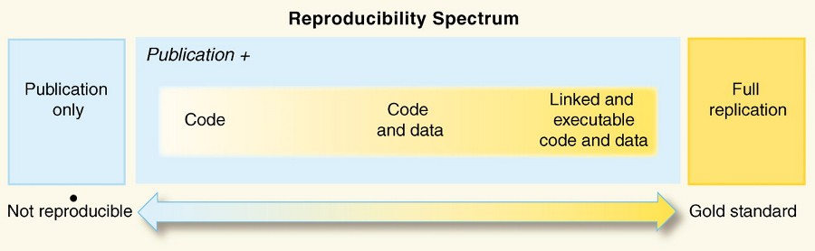
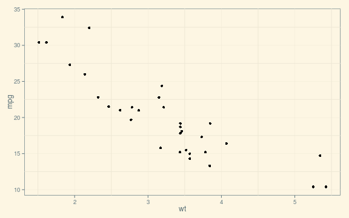

- La Ciencia, su metodología y filosofía
- Ciencia y Código Libre/Abierto
- Tendencias
- Acceso Abierto (Open Access)
- Ciencia Abierta (Open Science)
- Investigación Reproducible (Reproducible Research)
Jesús M. Castagnetto, Ph.D.
Universidad Peruana Cayetano Heredia
La actividad intelectual y práctica que involucra el estudio sistemático de
la estructura y comportamiento del universo, a través de la observación
y experimentación.
La Ciencia no nos da la verdad absoluta, la ciencia es un mecanismo. Es un
modo de mejorar nuestro conocimiento de la naturaleza, un sistema para
contrastar nuestros pensamientos con el universo y ver si coinciden.
Tres amigos estaban viajando en un tren: un abogado, un físico y un matemático.
Toda la Ciencia es incierta y sujeta a revisión. Lo glorioso de la ciencia
es el (poder) imaginar mas de lo que podemos probar.
La Ciencia es una forma de pensar mucho mas que un conjunto de
conocimientos acumulados.
\(\ldots\)Por 'acceso abierto'\(\ldots\)queremos decir su disponibilidad
gratuita en Internet público, permitiendo a cualquier usuario leer, descargar,
copiar, distribuir, imprimir, buscar o usarlos con cualquier propósito legal,
sin ninguna barrera financiera, legal o técnica\(\ldots\)
\(\ldots\)La única limitación en cuanto a reproducción y distribución y el
único rol del copyright en este dominio, deberá ser dar a los autores el
control sobre la integridad de sus trabajos y el derecho de ser adecuadamente
reconocidos y citados\(\ldots\)

Open Knowledge saves
lives
\(\ldots\)
Closed access means people die





(Roger Peng)
$$
\begin{align}
\dot{x} & = \sigma(y-x) \\
\dot{y} & = \rho x - y - xz \\
\dot{z} & = -\beta z + xy
\end{align}
$$
\[ \begin{align} \dot{x} & = \sigma(y-x) \\ \dot{y} & = \rho x - y - xz \\ \dot{z} & = -\beta z + xy \end{align} \]
library(ggplot2)
library(ggthemes)
qplot(wt, mpg, data = mtcars) + theme_solarized()

One thing I have learned in a long life: that all our science, measured
against reality, is primitive and childlike — and yet it is the most precious
thing we have.